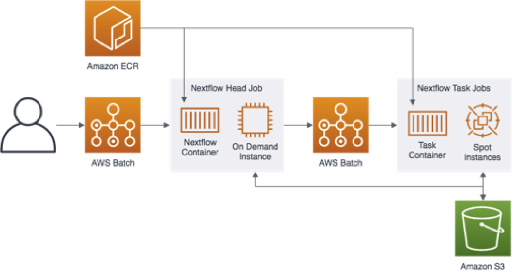

Nextflow on AWS Batch

Nextflow is a reactive workflow framework and domain specific language (DSL) developed by the Comparative Bioinformatics group at the Barcelona Centre for Genomic Regulation (CRG) that enables scalable and reproducible scientific workflows using software containers.
Nextflow can be run either locally or on a dedicated EC2 instance. The latter is preferred if you have long running workflows - with the caveat that you are responsible for stopping the instance when your workflow is complete. The architecture presented in this guide demonstrates how you can run Nextflow using AWS Batch in a managed and cost effective fashion.
Requirements
To get started using Nextflow on AWS you'll need the following setup in your AWS account:
- A VPC with at least 2 subnets (preferrably ones that are private)
- The Genomics Workflow Core Environment
- A containerized
nextflowexecutable with a custom entrypoint script that uses AWS Batch supplied environment variables for configuration information - A Batch Job Definition that runs a Nextflow head node
- An IAM Role for the Nextflow head node job that allows it to submit AWS Batch jobs
- (optional) An S3 Bucket to store your Nextflow session cache
The following will help you deploy these components
VPC
If you are handling sensitive data in your Nextflow pipelines, we recommend using at least 2 private subnets for AWS Batch compute jobs. EC2 instances launched into private subnets do not have public IP addresses, and therefore cannot be directly accessed from the public internet. They can still retain internet access from within the VPC - e.g. to pull source code, retrive public datasets, or install required softwre - if networking is configured appropriately. If the target VPC you want to deploy Nextflow into already has this, you can skip ahead. If not, you can use the CloudFormation template below, which uses the AWS VPC Quickstart, to create one meeting these requirements.
| Name | Description | Source | Launch Stack |
|---|---|---|---|
| VPC (Optional) | Creates a new Virtual Private Cloud to use for your genomics workflow resources. | cloud_download | play_arrow |
Genomics Workflow Core
To launch the Genomics Workflow Core in your AWS account, use the CloudFormation template below.
| Name | Description | Source | Launch Stack |
|---|---|---|---|
| Genomics Workflow Core | Create EC2 Launch Templates, AWS Batch Job Queues and Compute Environments, a secure Amazon S3 bucket, and IAM policies and roles within an existing VPC. NOTE: You must provide VPC ID, and subnet IDs. | cloud_download | play_arrow |
The core is agnostic of the workflow orchestrator you intended to use, and can be installed multiple times in your account if needed (e.g. for use by different projects). Each installation uses a Namespace value to group resources accordingly. By default, the Namespace is set to the stack name, which must be unique within an AWS region.
See the Core Environment For more details on the core's architecture.
Nextflow Resources
The the following CloudFormation template will create a nextflow container image, Batch Job Definition, and an IAM Role for a Nextflow head node job:
| Name | Description | Source | Launch Stack |
|---|---|---|---|
| Nextflow Resources | Create Nextflow specific resources needed to run on AWS: an S3 Bucket for nextflow workflow scripts, Nextflow container, AWS Batch Job Definition for a Nextflow head node, and an IAM role for the nextflow head node job | cloud_download | play_arrow |
Deployment Details
Nextflow container
For AWS Batch to run Nextflow as a Batch Job, it needs to be containerized. The container image for nextflow built by the Nextflow Resources CloudFormation template includes capabilities to automatically configure Nextflow and run workflow scripts in S3. If you want to add specialized capabilities or require a particular version of Nextflow, you can modify the source code to best suit your needs.
To create such a container, you can use a Dockerfile like the one below:
# use the upstream nextflow container as a base image
ARG VERSION=latest
FROM nextflow/nextflow:${VERSION} AS build
FROM amazonlinux:2 AS final
COPY --from=build /usr/local/bin/nextflow /usr/bin/nextflow
RUN yum update -y \
&& yum install -y \
curl \
hostname \
java \
unzip \
&& yum clean -y all
RUN rm -rf /var/cache/yum
# install awscli v2
RUN curl -s "https://awscli.amazonaws.com/awscli-exe-linux-x86_64.zip" -o "/tmp/awscliv2.zip" \
&& unzip -q /tmp/awscliv2.zip -d /tmp \
&& /tmp/aws/install -b /usr/bin \
&& rm -rf /tmp/aws*
ENV JAVA_HOME /usr/lib/jvm/jre-openjdk/
# invoke nextflow once to download dependencies
RUN nextflow -version
# install a custom entrypoint script that handles being run within an AWS Batch Job
COPY nextflow.aws.sh /opt/bin/nextflow.aws.sh
RUN chmod +x /opt/bin/nextflow.aws.sh
WORKDIR /opt/work
ENTRYPOINT ["/opt/bin/nextflow.aws.sh"]
Note
If you are trying to keep your container image as small as possible, keep in mind that Nextflow relies on basic linux tools such as awk, bash, ps, date, sed, grep, egrep, and tail which may need to be installed on extra minimalist base images like alpine.
An example entrypoint script for the container is shown below and demonstrates how to wrap a nextflow run ... command so that it can be run as an AWS Batch Job. The script takes command line arguments that are passed in by AWS Batch during job submission. The first parameter should be a Nextflow "project", and any additional parameters are passed along to the Nextflow executable. Nextflow supports pulling projects directly from Git repositories. You can extend this behavior to allow projects to be specified as an S3 URI - a bucket and folder therein where you have staged your Nextflow scripts and supporting files (like additional config files). This is useful if you publish tested pipelines (e.g. via a continuous integration workflow) as static artifacts in S3. For details on how to do this see the full source code for the script.
The script automatically configures Nextflow to use AWS Batch using environment variables defined in the Nextflow Job Definition. These include:
NF_WORKDIR- an S3 URI used for to store intermediate and final workflow outputsNF_LOGSDIR- an S3 URI used to store workflow session cache and logsNF_JOB_QUEUE- the AWS Batch Job Queue that workflow processes will be submitted to
Importantly, the script also handles restoration/preservation of the workflow session cache to enable using previously computed results via the -resume flag.
#!/bin/bash
NEXTFLOW_PROJECT=$1 # first argument is a project
shift
NEXTFLOW_PARAMS="$@" # additional arguments are nextflow options (e.g. -resume) or workflow parameters
# Create the default config using environment variables
# passed into the container by AWS Batch
NF_CONFIG=~/.nextflow/config
cat << EOF > $NF_CONFIG
workDir = "$NF_WORKDIR"
process.executor = "awsbatch"
process.queue = "$NF_JOB_QUEUE"
aws.batch.cliPath = "/home/ec2-user/miniconda/bin/aws"
EOF
echo "=== CONFIGURATION ==="
cat ~/.nextflow/config
# stage in session cache
# .nextflow directory holds all session information for the current and past runs.
# it should be `sync`'d with an s3 uri, so that runs from previous sessions can be
# resumed
echo "== Restoring Session Cache =="
aws s3 sync --only-show-errors $NF_LOGSDIR/.nextflow .nextflow
function preserve_session() {
# stage out session cache
if [ -d .nextflow ]; then
echo "== Preserving Session Cache =="
aws s3 sync --only-show-errors .nextflow $NF_LOGSDIR/.nextflow
fi
# .nextflow.log file has more detailed logging from the workflow session and is
# nominally unique per session.
#
# when run locally, .nextflow.logs are automatically rotated
# when syncing to S3 uniquely identify logs by the AWS Batch Job ID
if [ -f .nextflow.log ]; then
echo "== Preserving Session Log =="
aws s3 cp --only-show-errors .nextflow.log $NF_LOGSDIR/.nextflow.log.$AWS_BATCH_JOB_ID
fi
}
# set a trap so that session information is preserved when the container exits
trap preserve_session EXIT
echo "== Running Workflow =="
echo "nextflow run $NEXTFLOW_PROJECT $NEXTFLOW_PARAMS"
nextflow run $NEXTFLOW_PROJECT $NEXTFLOW_PARAMS
Note
AWS_BATCH_JOB_ID is one of several environment variables that are automatically provided to all AWS Batch jobs. The NF_WORKDIR, NF_LOGSDIR, and NF_JOB_QUEUE variables are ones set by the Batch Job Definition (see below).
Job instance AWS CLI
Nextflow uses the AWS CLI to stage input and output data for tasks. The AWS CLI can either be installed in the task container or on the host instance that task containers run on.
Adding the AWS CLI to an existing containerized tool requires rebuilding the image to include it. Assuming your tool's container image is based on CentOS, this would require a Dockerfile like so:
FROM myoriginalcontainer
RUN yum install -y awscli
ENTRYPOINT ["mytool"]
If you have many tools in your pipeline, rebuilding all of their images and keeping them up to date may not be ideal.
Using a version installed on the host instance means you can use pre-existing containers. To leveraage this, the AWS CLI must be self contained and not rely on system shared libraries. The AWS CLI v2 is packaged this way. The Launch Template deployed by the Core Environment handles installing the AWS CLI v2 on instances launched by AWS Batch.
Batch job definition
An AWS Batch Job Definition to run a containerized Nextflow is shown below.
{
"jobDefinitionName": "nextflow",
"jobDefinitionArn": "arn:aws:batch:<region>:<account-number>:job-definition/nextflow:1",
"type": "container",
"parameters": {},
"containerProperties": {
"image": "<account-number>.dkr.ecr.<region>.amazonaws.com/nextflow:latest",
"vcpus": 2,
"memory": 1024,
"command": [],
"jobRoleArn": "<nextflowJobRoleArn>",
"volumes": [],
"environment": [
{
"name": "NF_LOGSDIR",
"value": "s3://<bucket>/_nextflow/logs"
},
{
"name": "NF_JOB_QUEUE",
"value": "<jobQueueArn>"
},
{
"name": "NF_WORKDIR",
"value": "s3://<bucket>/_nextflow/runs"
}
],
"mountPoints": [],
"ulimits": [],
"resourceRequirements": []
}
}
The <nextflowJobRoleArn> is a reference to the IAM Role required by Nextflow head jobs and is described below.
Nextflow IAM Role
Nextflow needs to be able to create Batch Job Defintions, submit and cancel Batch Jobs, and read workflow logs and session information from S3. These permissions are provided via a Job Role associated with the Job Definition. Policies for this role would look like the following:
Nextflow-Batch-Access
This policy gives full access to AWS Batch.
{
"Version": "2012-10-17",
"Statement": [
{
"Action": [
"batch:*"
],
"Resource": "*",
"Effect": "Allow"
}
]
}
Nextflow-S3Bucket-Access
This policy gives full access to the buckets used to store workflow data and Nextflow session metadata.
{
"Version": "2012-10-17",
"Statement": [
{
"Action": [
"s3:*"
],
"Resource": [
"arn:aws:s3:::<nextflow-bucket-name>",
"arn:aws:s3:::<nextflow-bucket-name>/*",
"arn:aws:s3:::<data-bucket-name>",
"arn:aws:s3:::<data-bucket-name>/*"
],
"Effect": "Allow"
}
]
}
Nextflow specific S3 Bucket
Because running as a container will be an ephemeral process, the containerized version of nextflow stores workflow session information in S3 using paths described by NF_WORKDIR and NF_LOGSDIR environment variables. These allow you to use Nextflow's -resume flag to restart a workflow that was previously interrupted at the step it left off at.
This bucket can be independent of the S3 bucket used to store workflow input and output data if necessary.
Workflow process definitions
The process definitions in Nextflow scripts should include a couple key parts for running on AWS Batch:
- the
containerdirective cpusandmemorydirectives to define resource that will be used by Batch Jobs
!!! Note: The container image used to run a process needs to be capable of running the AWS CLI. It doesn't have to
contain the CLI but it does need shared libraries from glib.c such as libz.so.1 which may not be present in very
minimal images.
An example definition for a simple "Hello World" process is shown below:
texts = Channel.from("AWS", "Nextflow")
process hello {
// directives
// a container images is required
container "ubuntu:latest"
// compute resources for the Batch Job
cpus 1
memory '512 MB'
input:
val text from texts
output:
file 'hello.txt'
"""
echo "Hello $text" > hello.txt
"""
}
For each process in your workflow, Nextflow will create a corresponding Batch Job Definition, which it will re-use for subsequent workflow runs. The process defined above will create a Batch Job Definition called nf-ubuntu-latest that looks like:
{
"jobDefinitionName": "nf-ubuntu-latest",
"jobDefinitionArn": "arn:aws:batch:<region>:<account-number>:job-definition/nf-ubuntu-latest:1",
"revision": 1,
"status": "ACTIVE",
"type": "container",
"parameters": {
"nf-token": "43869867b5fbae16fa7cfeb5ea2c3522"
},
"containerProperties": {
"image": "ubuntu:latest",
"vcpus": 1,
"memory": 1024,
"command": [
"true"
],
"volumes": [
{
"host": {
"sourcePath": "/opt/aws-cli"
},
"name": "aws-cli"
}
],
"environment": [],
"mountPoints": [
{
"containerPath": "/opt/aws-cli",
"readOnly": true,
"sourceVolume": "aws-cli"
}
],
"ulimits": []
}
}
You can also use the aws.batch.volumes config option to define additional volumes and mount points so that your processes can have access to directories on the host instance.
Running workflows
To run a workflow you submit a nextflow Batch job to the appropriate Batch Job Queue via:
- the AWS Batch Console
- the command line with the AWS CLI
This is what starting a workflow via the AWS CLI would look like using a modified fork of Nextflow's built-in "hello-world" workflow:
aws batch submit-job \
--job-name nf-hello \
--job-queue <queue-name> \
--job-definition nextflow-<nextflow-stack-namespace> \
--container-overrides command=wleepang/hello
!!! Note: The reason for the modification was purely to make use of a container that could provide libraries (such as libz.so.1) needed to run the AWS CLI which is responsible for marshalling files to and from S3
After submitting a workflow, you can monitor the progress of tasks via the AWS Batch console.
For the "Hello World" workflow above you will see five jobs run in Batch - one for the head node, and one for each Channel text as it goes through the hello process.
For a more complex example, you can try the following, which will run a demo RNASeq workflow against data in the 1000 Genomes AWS Public Dataset:
aws batch submit-job \
--job-name nf-core-rnaseq \
--job-queue <queue-name> \
--job-definition nextflow-<nextflow-stack-namespace> \
--container-overrides command=rnaseq-nf,\
"--reads","'s3://1000genomes/phase3/data/HG00243/sequence_read/SRR*_{1,2}.filt.fastq.gz'",\
"--genome","GRCh37",\
"--skip_qc"
For the example "rnaseq" workflow you will see 5 jobs run in Batch over the course of a couple hours - the head node will last the whole duration of the pipeline while the others will stop once their step is complete. You can look at the CloudWatch logs for the head node job to monitor workflow progress. Note the additional single quotes wrapping the 1000genomes path.
In both of the examples above, submitting workflows is an asynchronous task allowing you to quickly move on to other tasks. Importantly, AWS Batch handled scaling up all the compute needed to run workflow jobs, and when the workflow was complete, AWS Batch scaled all compute resources back down.
Cost optimizing workflows
Optimizing the allocation of resources to your workflows can help you to reduce costs